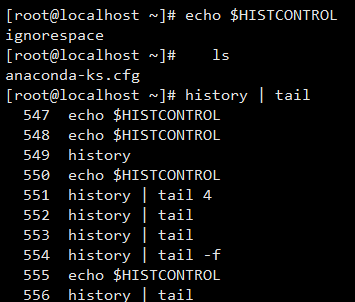

一、命令行历史
-
保存你输入的命令历史。可以用它来重复执行命令
-
登录shell时，会读取命令历史文件中记录下的命令 ~/.bash_history
-
登录进shell后新执行的命令只会记录在缓存中；这些命令会在用户退出时"追加"至命令历史文件中
二、HISTORY 命令
history [-c] [-d offset] [-n]
history -anrw [filename]
history -ps arg[arg...]
-c 清除命令历史
-d offset 删除历史中指定的第offset个命令
n 显示最近的n条历史
-a 追加本次会话执行的命令历史列表至历史文件
-r 读取历史文件附加到历史列表
-w 保存历史列表到指定的历史文件
-n 读历史文件中未读过的行至历史列表
-p 展开历史参数成多行,但不存在历史列表中
-s 展开历史参数成一行,附加到历史列表后
三、命令历史相关环境变量
-
HISTSIZE 命令历史记录的条数
-
HISTFILE 指定历史文件，默认为 ~/.bash_history
-
HISTFILESIE 命令历史文件记录历史的条数
-
HISTTIMEFORMAT = " %F %T " 显示时间
-
HISTIGNORE = "str1 : str2* ..." 忽略str1命令，str2开头的历史命令
> 控制命令历史的记录方式
- 环境变量: HISTCONTROL —— [ ignoredups：默认，忽略重复的命令，连续且相同的命令为“重复” ignorespace：忽略所有以空格开头的命令 ignoreboth：相当于 ignoredups、ignorespace的结合 erasedups：删除重复的命令 ]
- 控制方式 export 变量名=“值”
- 存放文件 —— /etc/profile | ~/.bash_profile

重复前一个命令
▶ 使用上方向键，并回车执行
▶ !! 并回车执行
▶ 输入 ! -1 并回车执行
▶ Ctrl + P 并回车执行
案例演示
- 使用上 下 方向键上下浏览从前输入的命令
- !:0__ 执行前一条命令[去除参数]
- Ctrl + R 在历史记录中搜索命令[ Ctrl + G 退出历史搜索模式]
- Ctrl + J 执行当前命令
- ! n 执行history命令输出对于n的命令
- ! - n 执行history历史中倒数第n个命令
调用历史参数
- !$ | [Esc, . —— 点击Esc键后松开，再点击. 键] | Alt + . 重新调用前一个命令中的最后一个参数
- __command !^ | !$ | !* | !:n__利用上一个命令的第一个参数 | 最后一个参数 | 全部参数 | 第n个参数 做command的参数
- __command !n:^ | !n:$ | !n:m | !n:* __调用第n条命令的第一个参数 | 最后一个参数 | 第m个参数 | 所有参数
- __command !string:^ | !string:$ | !string:n | !string:* __从命令历史中搜索以string开头的命令，并获取其第一个参数 | 最后一个参数 | 第n个参数 | 所有参数